Chapter 4 Neural Hydrology
Author: Yuxin Qiu
Supervisor: Henri Funk
Degree: Bachelor
4.1 Abstract
Hydrological prediction under climate variability is a central challenge in environmental statistics, especially when regional observations are limited and hydro-climatic conditions deviate from historical norms. This chapter presents a detailed investigation of neural hydrology, with emphasis on recurrent deep learning architectures and transfer learning strategies for streamflow forecasting. We first position neural methods in relation to classical process-based models, then formalize sequence-learning principles that allow Long Short-Term Memory (LSTM) networks to represent delayed catchment memory effects. We further examine physically informed variants, including mass-conserving architectures, as mechanisms to improve structural plausibility under distributional shift.
The empirical component uses CAMELS-US data and a three-way comparison framework across local-from-scratch training, global pretraining, and global-to-local fine-tuning over 18 geographic groups. Results are analyzed with basin-weighted NSE and KGE, group-level contrasts, basin-level distributional diagnostics, and architecture cross-checks. Across evaluation views, fine-tuning provides consistent gains over local-only baselines and additional improvement over zero-shot global inference in this benchmark setting. Interpretation is framed through bias-variance trade-offs, representation reuse, and regional adaptation dynamics.
Overall, the chapter argues that neural hydrology should be understood not merely as a high-performance forecasting tool, but as a statistical modeling framework where data-driven representation learning, physical constraints, and transfer protocols can be jointly optimized for robust prediction under non-stationary climate conditions.
4.2 Introduction
Streamflow prediction, that is, estimating river discharge from meteorological forcings, is one of the oldest and most consequential tasks in hydrology. Accurate forecasts are critical for flood early-warning systems, reservoir operation, drought monitoring, and hydropower planning. Under climate change, this task becomes harder because forcing regimes are increasingly non-stationary: precipitation intensity distributions, temperature seasonality, and snowmelt timing all shift over time (IPCC 2021b).
This chapter reviews the emergence of deep learning as the leading paradigm for data-driven streamflow modelling, introduces the NeuralHydrology Python library, discusses architectures that embed physical constraints into neural networks, and explores strategies for transfer learning in a non-stationary climate.
From a statistical perspective, the central object is a conditional forecasting function \(f_\theta\) that maps a multivariate hydro-meteorological history and static basin descriptors to a discharge distribution:
\[ \hat{q}_{t+\tau} \sim f_\theta\Big(\mathbf{x}_{1:t}, \mathbf{z}, \tau\Big), \]
where \(\mathbf{x}_{1:t}\) denotes dynamic forcings up to time \(t\), \(\mathbf{z}\) denotes time-invariant basin attributes, and \(\tau\) is the lead-time index. In deterministic setups, one models the conditional mean \(\mathbb{E}[q_{t+\tau}\mid\mathbf{x}_{1:t},\mathbf{z}]\); in probabilistic setups, one models the full predictive density \(p(q_{t+\tau}\mid\mathbf{x}_{1:t},\mathbf{z})\).
The hydrological difficulty is that this map is high-dimensional, nonlinear, delayed, and non-stationary. Hence, the chapter emphasizes three scientific questions:
- How can sequence models approximate memory-dependent rainfall-runoff dynamics?
- How can physical constraints improve plausibility under extrapolation?
- How can transfer learning reduce estimation variance in data-scarce regions?
4.3 Background: From Process-Based to Data-Driven Models
4.3.1 Traditional Process-Based Models
Classical hydrological models describe catchment behaviour through systems of differential equations representing physical processes: precipitation infiltration, evapotranspiration, soil moisture routing, and channel flow. Well-known examples include:
- HBV (Hydrologiska Byrans Vattenbalansavdelning) - a bucket-type conceptual model
- VIC (Variable Infiltration Capacity) - a distributed land-surface model
- SAC-SMA (Sacramento Soil Moisture Accounting) - used operationally by NOAA
These models are physically interpretable and operate well in data-sparse settings. However, they suffer from three fundamental limitations:
- Parameter estimation - many parameters (soil depth, hydraulic conductivity, recession coefficients) cannot be measured directly and must be calibrated separately for each catchment.
- Spatial heterogeneity - parameter sets calibrated for one catchment cannot be directly transferred to ungauged basins.
- Non-stationarity - parameters calibrated under historical climate conditions may not hold under future climate forcing (Milly et al. 2008).
4.3.2 Process-Based Formulation and Structural Error
For a conceptual catchment model, storage dynamics can be represented generically as:
\[ S_{t+1} = S_t + P_t - ET_t - Q_t - L_t, \]
where \(S_t\) is catchment storage, \(P_t\) precipitation input, \(ET_t\) evapotranspiration, \(Q_t\) discharge, and \(L_t\) unobserved losses (deep percolation, abstraction, or closure error). Practical model implementations replace these terms with parameterized constitutive relationships, for example:
\[ Q_t = g_\phi(S_t, \mathbf{u}_t), \quad ET_t = h_\psi(S_t, T_t, R_t, V_t), \]
with calibration parameters \((\phi,\psi)\) and meteorological covariates \(\mathbf{u}_t\). Calibration thus solves an inverse problem that is often ill-posed: multiple parameter sets can yield similar hydrographs (equifinality), while parameter meaning can vary with the chosen process simplifications.
This generates two conceptually different errors:
- Parametric uncertainty: insufficient data to identify parameters uniquely.
- Structural uncertainty: omitted or misspecified process mechanisms.
Deep learning approaches primarily target structural flexibility by reducing the need to prescribe low-dimensional process forms a priori.
4.3.3 The Deep Learning Breakthrough
The pivotal step came in 2018 when Kratzert et al. (2018) demonstrated that a standard Long Short-Term Memory (LSTM) network, trained on the CAMELS-US dataset (Addor et al. 2017) of 241 catchments, outperformed all individually calibrated conceptual models - without any catchment-specific calibration. The LSTM’s ability to learn temporal dependencies, coupled with its capacity to exploit information from hundreds of basins simultaneously, created a step change in the field.
4.4 LSTM-Based Methods for Streamflow Modelling
4.4.1 The LSTM Architecture
The LSTM (Hochreiter and Schmidhuber 1997) maintains a cell state \(\mathbf{c}_t\) as an internal memory and uses three gating mechanisms to regulate information flow:
\[\mathbf{i}_t = \sigma(\mathbf{W}_i [\mathbf{h}_{t-1}, \mathbf{x}_t] + \mathbf{b}_i)\] \[\mathbf{f}_t = \sigma(\mathbf{W}_f [\mathbf{h}_{t-1}, \mathbf{x}_t] + \mathbf{b}_f)\] \[\mathbf{g}_t = \tanh(\mathbf{W}_g [\mathbf{h}_{t-1}, \mathbf{x}_t] + \mathbf{b}_g)\] \[\mathbf{o}_t = \sigma(\mathbf{W}_o [\mathbf{h}_{t-1}, \mathbf{x}_t] + \mathbf{b}_o)\] \[\mathbf{c}_t = \mathbf{f}_t \odot \mathbf{c}_{t-1} + \mathbf{i}_t \odot \mathbf{g}_t\] \[\mathbf{h}_t = \mathbf{o}_t \odot \tanh(\mathbf{c}_t)\]
where \(\mathbf{i}_t\), \(\mathbf{f}_t\), \(\mathbf{o}_t\) are the input, forget, and output gates respectively; \(\sigma\) is the sigmoid function; and \(\odot\) denotes element-wise multiplication. At each time step the model receives a vector of dynamic inputs (precipitation, temperature, solar radiation) as \(\mathbf{x}_t\) and the previous hidden state \(\mathbf{h}_{t-1}\).
Crucially, the forget gate \(\mathbf{f}_t\) allows the network to selectively retain long-term memory - enabling it to capture multi-month hydrological memory effects such as groundwater recharge and snowpack accumulation, which are notoriously difficult to represent in conceptual models.
4.4.2 Optimization Objective and Gradient Flow
Given a training sample \(\mathcal{D}=\{(\mathbf{x}^{(n)}_{1:T}, q^{(n)}_{1:T})\}_{n=1}^N\), LSTM training minimizes an empirical risk:
\[ \min_\theta \; \frac{1}{N}\sum_{n=1}^N \mathcal{L}\big(q^{(n)}_{1:T}, f_\theta(\mathbf{x}^{(n)}_{1:T})\big) + \lambda\,\Omega(\theta), \]
where \(\mathcal{L}\) may be MSE/NSE-related and \(\Omega\) denotes regularization (e.g., dropout-induced stochastic regularization and implicit optimizer bias). The LSTM cell-state pathway improves gradient transport because \(\partial \mathbf{c}_t / \partial \mathbf{c}_{t-1} = \mathbf{f}_t\), allowing long-range credit assignment when forget-gate activations remain away from zero. In hydrology, this is directly relevant for delayed runoff generation and snow-storage dynamics.
From a system-identification viewpoint, the recurrent state acts as a latent storage vector whose components are not physically named but can encode multi-timescale memory. This latent-state interpretation is one reason LSTMs outperform short-memory models in daily rainfall-runoff tasks.
4.4.3 From Single-Basin to Multi-Basin: EA-LSTM
Kratzert et al. (2019) extended the single-basin LSTM to simultaneous multi-basin training using the Entity-Aware LSTM (EA-LSTM). The key modification is that the input gate is conditioned on static catchment attributes \(\mathbf{x}_s\) (soil type, terrain slope, land cover, climate indices) rather than the dynamic sequence:
\[\mathbf{i}_t = \sigma(\mathbf{W}_i \mathbf{x}_s + \mathbf{b}_i)\]
This allows the same model to adapt its memory behaviour to each catchment’s physical characteristics, effectively learning a regional function that maps catchment attributes to hydrological response. In the benchmark on 531 CAMELS-US basins, the EA-LSTM substantially outperformed the best process-based baseline (SAC-SMA), indicating a clear performance advantage in this benchmark setting.
4.4.4 Hierarchical Interpretation of EA-LSTM
EA-LSTM can be interpreted as a hierarchical model with partial pooling across basins. Dynamic parameters are globally shared, while the static-attribute-conditioned gate induces basin-specific modulation. In that sense, EA-LSTM approximates a data-driven random-effects structure:
\[ f_{\theta}(\mathbf{x}_{1:t}, \mathbf{z}) = f_{\theta_g,\theta_b(\mathbf{z})}(\mathbf{x}_{1:t}), \]
where \(\theta_g\) are global sequence parameters and \(\theta_b(\mathbf{z})\) are attribute-conditioned adjustments. This architecture balances bias and variance more effectively than independent local calibration in low-sample basins.
4.4.5 Evaluation Metrics: NSE and KGE
We evaluate predictive skill using two complementary metrics. The Nash-Sutcliffe Efficiency (NSE) is defined as:
\[ \text{NSE} = 1 - \frac{\sum_{t=1}^{T}(\hat{q}_t - q_t)^2}{\sum_{t=1}^{T}(\bar{q} - q_t)^2}. \]
An NSE of 1 indicates a perfect model; NSE = 0 means the model is no better than the climatological mean; negative NSE indicates the model is worse than the mean.
To complement NSE, we report the Kling-Gupta Efficiency (KGE):
\[ \text{KGE} = 1 - \sqrt{(r-1)^2 + (\alpha-1)^2 + (\beta-1)^2}, \]
where
\[ r = \mathrm{corr}(\hat{q}, q), \qquad \alpha = \frac{\sigma_{\hat{q}}}{\sigma_q}, \qquad \beta = \frac{\mu_{\hat{q}}}{\mu_q}. \]
Using both NSE and KGE reduces the risk of over-interpreting a single metric and helps separate timing, variability, and bias effects.
4.5 NeuralHydrology: A Python Library for Deep Learning in Hydrology
NeuralHydrology (Kratzert et al. 2022) is an open-source Python library developed at the Institute for Machine Learning, Johannes Kepler University Linz, built on top of PyTorch. Its design philosophy emphasises modularity: new datasets, model architectures, loss functions, and training strategies can be added without modifying the core framework.
4.5.1 Key Features
- Configuration-file driven - experiments are fully specified in
.ymlfiles, enabling reproducibility without touching source code. - Model zoo - a diverse set of pre-implemented architectures (see Section 4.5.2).
- Dataset zoo - native support for CAMELS-US, CAMELS-GB, CAMELS-DE, CAMELS-AUS, CAMELS-CL, LamaH, Caravan, and a generic interface for custom datasets.
- Evaluation - built-in NSE, KGE, MSE, RMSE and signature-based metrics.
- Probabilistic heads - GMM, CMAL, UMAL for uncertainty quantification.
From a computational reproducibility standpoint, the configuration-driven interface is scientifically important: it creates explicit, versionable experiment declarations. This improves methodological traceability and reduces hidden researcher degrees of freedom during iterative experimentation.
4.5.2 Model Zoo
| Model | Architecture | Key Idea |
|---|---|---|
| CudaLSTM | Standard LSTM | Baseline; uses CUDA-optimised PyTorch implementation |
| EA-LSTM | Entity-Aware LSTM | Static features condition input gate (Kratzert et al. 2019) |
| MC-LSTM | Mass-Conserving LSTM | Precipitation mass budget enforced (Hoedt et al. 2021) |
| MTS-LSTM | Multi-Timescale LSTM | Joint training at daily and hourly resolution (Gauch et al. 2021) |
| ODE-LSTM | ODE-based LSTM | Continuous-time dynamics for irregular sampling |
| Transformer | Self-attention | Captures global temporal dependencies |
| Mamba | State-space model | Linear-time sequence modelling (Gu and Dao 2023) |
| xLSTM | Extended LSTM | Exponential gating (Beck et al. 2024) |
| HybridModel | LSTM + conceptual | Neural parameterisation of process models |
A minimal training configuration looks as follows:
# config.yml - single basin LSTM example
experiment_name: camels_us_lstm_demo
model: cudalstm
hidden_size: 256
initial_forget_bias: 3
output_dropout: 0.4
loss: NSE
optimizer: Adam
learning_rate:
0: 1e-3
10: 5e-4
epochs: 30
seq_length: 365
dataset: camels_us
dynamic_inputs:
- PRCP(mm/day)_nldas
- tmax(C)_daymet
- tmin(C)_daymet
- srad(W/m2)_daymet
- vp(Pa)_daymet
target_variables:
- QObs(mm/d)Training is launched from the command line:
In reproducible workflows, this CLI-level specification should be complemented with fixed random seeds, logged software versions, and immutable run directories. Together, these reduce procedural variance when comparing architectures or transfer settings.
4.6 Transfer Learning in a Changing Climate
4.6.1 Motivation
Under climate change, hydrological systems are subject to non-stationarity: the statistical relationship between climate forcing and streamflow may shift due to changing land cover, permafrost thaw, or altered precipitation seasonality (Milly et al. 2008). A model trained on historical data may fail under future conditions if it has over-fitted to the historical distribution.
Transfer learning offers a principled solution: pre-train a model on a large, diverse dataset, then adapt it to a target domain or future scenario with limited additional data.
4.6.2 Transfer Learning as Risk Decomposition
Let \(\mathcal{R}_T(\theta)\) be expected target-domain risk. Transfer learning seeks a parameter initialization \(\theta_0\) from source-domain training such that fine-tuned optimization reaches a low-risk basin for \(\mathcal{R}_T\) with fewer target samples. Intuitively, pretraining reduces estimation variance by starting from a representation already aligned with hydrological structure (seasonality, recession behavior, storage memory), while fine-tuning reduces target-domain bias.
This yields a practical bias-variance trade-off:
- local-from-scratch: low transfer bias potential, high variance;
- global zero-shot: low variance, possibly higher target bias;
- global + fine-tune: compromise with lower variance and reduced target bias.
4.6.3 Pre-Train on Large-Sample Data
The first step is training on the full CAMELS dataset (531 basins across the continental United States, or multi-country datasets like Caravan (Kratzert, Nearing, Frame, et al. 2023) with >6000 basins). This exposes the model to a wide range of climates, soils, and land covers, building a general-purpose hydrological encoder.
4.6.4 Fine-Tuning Strategies
NeuralHydrology supports fine-tuning via the configuration:
Three strategies are commonly used:
- Head-only fine-tuning - freeze the LSTM body, retrain only the linear output head on target-basin data. Fast; suitable for small data budgets.
- Full fine-tuning - unfreeze all layers, fine-tune with a small learning rate. Higher capacity; risk of catastrophic forgetting.
- Layer-wise fine-tuning - unfreeze layers progressively from output to input. Balances adaptation and retention of general features.
In small-sample hydrology, catastrophic forgetting is a concrete concern. If learning rates are too high or too many layers are unfrozen immediately, basin-specific updates can overwrite globally useful runoff representations. Layer-wise schedules and reduced fine-tuning rates are therefore not just engineering heuristics, but stability controls for representation retention.
Frame et al. (2022) showed that LSTMs pre-trained on multi-basin data and fine-tuned on a single target basin significantly outperform models trained from scratch on the target basin alone, even when the target basin lies in a climate zone absent from pre-training data.
4.6.5 Climate Change Scenarios
For future projections, one strategy is delta-change forcing: apply projected changes from a GCM (e.g., CMIP6 precipitation and temperature anomalies) on top of historical forcing before feeding into the pre-trained neural model. The key challenge is that the model may extrapolate poorly to precipitation intensities or temperature regimes outside its training distribution.
Hoedt et al. (2021) argue that physically consistent architectures (such as MC-LSTM) are inherently more robust to distributional shift, because the mass conservation constraint prevents unphysical predictions even under novel forcing conditions.
A useful formal perspective is covariate shift:
\[ p_{\text{train}}(\mathbf{x}) \neq p_{\text{test}}(\mathbf{x}), \quad p(q\mid\mathbf{x}) \approx \text{partially shifted}, \]
where climate change modifies forcing distributions (extremes, seasonality, co-occurrence structure). Architectures with structural priors can reduce error growth under such shifts by preventing implausible state transitions.
4.7 Empirical Study: Regional Transfer Learning Under Data Scarcity
4.7.1 Study Design and Data
To move beyond conceptual discussion, we evaluate transfer learning in a controlled, three-way comparison benchmark built on CAMELS-US and implemented with NeuralHydrology.
The design intentionally separates three distinct learning regimes:
- Local (from scratch): train only on target-group basins with random initialization.
- Global (zero-shot): evaluate the globally pre-trained model directly on each target group.
- Global + Fine-tune: initialize from global weights and adapt on target-group basins.
The benchmark covers 18 geographic groups and 531 basins in total. Dynamic inputs are Daymet forcing variables and the target is daily streamflow.
Temporal splitting follows a non-contiguous design to stress out-of-distribution generalization:
- Train: 1999-10-01 to 2008-09-30
- Validation: 1980-10-01 to 1989-09-30
- Test: 1989-10-01 to 1999-09-30
This split choice is important. It avoids a trivial near-contiguous interpolation setting and creates a more realistic temporal domain shift scenario for climate-impact applications.
4.7.2 Statistical Framing of the Three-Way Comparison
Define basin-weighted group means \(\bar{m}_{\text{Local}}\), \(\bar{m}_{\text{Global}}\), and \(\bar{m}_{\text{FT}}\) for metric \(m\) (NSE or KGE):
\[ \bar{m}_{\cdot} = \frac{\sum_{g=1}^{G} n_g m_{g,\cdot}}{\sum_{g=1}^{G} n_g}, \]
where \(n_g\) is basin count in group \(g\). The principal contrasts are:
\[ \Delta_{\text{FT-Local}} = \bar{m}_{\text{FT}} - \bar{m}_{\text{Local}}, \qquad \Delta_{\text{FT-Global}} = \bar{m}_{\text{FT}} - \bar{m}_{\text{Global}}. \]
Positive values for both contrasts indicate that fine-tuning adds value relative to both local-only learning and zero-shot transfer.
4.7.3 Reproducible Analysis Setup
This section uses pre-computed experiment outputs rather than re-training models inside the document build. The rationale is methodological separation: model fitting is performed in the dedicated experiment pipeline, while this chapter performs transparent secondary analysis of frozen outputs. This improves reproducibility because the exact result tables are versioned and can be re-audited independently of the prose.
The training protocol behind these result files is summarized as follows:
- Global pretraining on 531 CAMELS-US basins to learn transferable runoff representations.
- Local baseline training per group from random initialization using only group basins.
- Fine-tuning initialized from the global checkpoint with lower learning rate and group-specific adaptation.
All three arms are evaluated on the same temporal test period and reported with unified NSE/KGE metrics. Therefore, between-arm differences can be interpreted as training strategy effects rather than differences in data split or metric definition.
4.7.4 Aggregate Performance
Table 4.1 reports basin-weighted overall metrics.
| Scope | Basins | NSE Local | NSE Global | NSE Fine-tune | Delta NSE FT-Local | Delta NSE FT-Global | KGE Local | KGE Global | KGE Fine-tune |
|---|---|---|---|---|---|---|---|---|---|
| Basin-weighted over 18 groups | 531 | 0.281 | 0.565 | 0.589 | 0.308 | 0.023 | 0.191 | 0.485 | 0.535 |
At aggregate scale, Fine-tune ranks first for both NSE and KGE. In practical terms, the model benefits from both broad hydrological priors (global pretraining) and region-specific adaptation (local fine-tuning).
From an inferential perspective, the aggregate table establishes effect direction but not effect homogeneity. Therefore, all subsequent figures are designed to answer a second question: are gains concentrated in a few groups/basins, or distributed broadly across the sample?
4.7.5 Group-Wise Structure of Improvement
The next two figures move from overall averages to group-level contrasts. The first shows absolute performance per group and model arm; the second shows paired deltas, which are easier to interpret as treatment effects of adaptation.
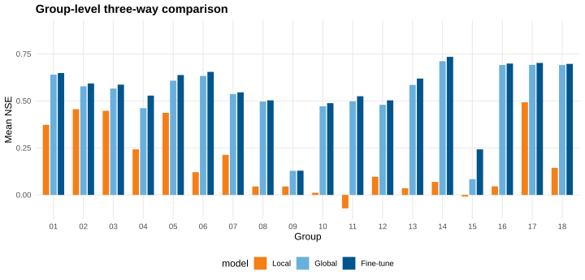
In this plot, the key visual test is rank stability within each group. If fine-tuning is consistently useful, the fine-tune bar should dominate local and usually global bars for most groups. This is exactly what is observed in the present run.
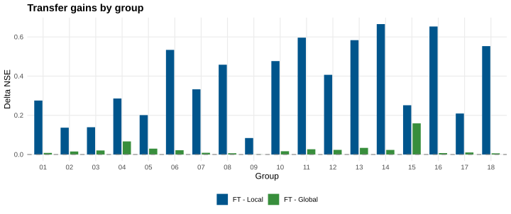
The dashed zero line is the decision boundary. Bars above zero imply positive transfer effect relative to the chosen comparator. The persistence of positive values across groups indicates that gains are structural rather than isolated accidents.
The group-level signal is clear: Fine-tune exceeds Local for all groups on NSE, and also exceeds Global at group mean level in all groups in this run. This pattern is consistent with a transfer-learning interpretation rather than isolated outliers.
4.7.6 Basin-Level Distributional Evidence
Group means can hide within-group variance. The next figures therefore analyze basin- level distributions to test whether improvements are broad-based at the individual basin scale.
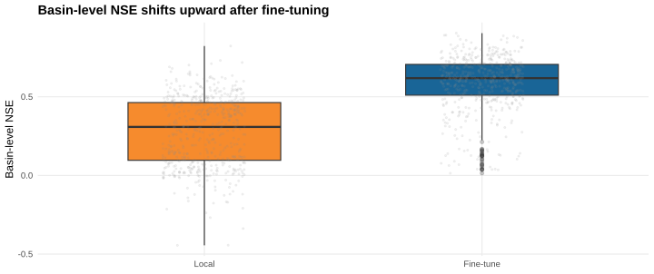
The boxplot compares medians, interquartile ranges, and tails between Local and Fine-tune. A simultaneous upward shift in median and upper quartiles supports a genuine distributional improvement rather than a change driven by few extreme basins.
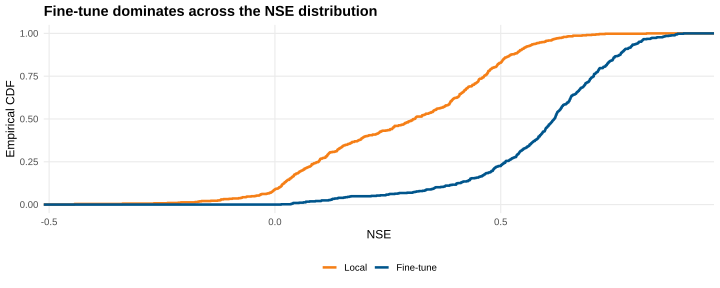
The ECDF provides a stricter dominance check: if the fine-tune curve is shifted toward higher NSE across most quantiles, then improvement is robust across weak, medium, and strong basins simultaneously.
Distributional diagnostics show that the benefit is broad-based: performance shifts are observed across quantiles rather than being concentrated in a few extreme basins.
4.7.7 Internal Validity Checks
To strengthen internal validity, this chapter uses concordant evidence across multiple diagnostic views:
- aggregate weighted means (global effect size);
- group-level contrasts (regional consistency);
- basin-level distributions (heterogeneity and outlier sensitivity);
- architecture cross-check (EA-LSTM vs CudaLSTM directional agreement).
Agreement across these views reduces the probability that conclusions arise from a single aggregation artifact.
4.7.8 Interpretation and Scientific Implications
The empirical results support three claims.
First, transfer learning is robustly beneficial under regional data limitations. The Fine-tune arm consistently improves upon purely local training.
Second, global pretraining alone is strong but not sufficient. Zero-shot Global already outperforms Local on average, but additional local adaptation yields further improvements in most practical settings.
Third, benefits are heterogeneous but systematic. Groups with weaker local baselines tend to show larger transfer gains, which is consistent with the hypothesis that shared cross-basin representations are especially valuable in information-scarce regimes.
This pattern is theoretically plausible: when local sample size is limited, local estimators have high variance and under-constrained dynamics. Global pretraining provides a regularized prior over runoff behavior, and fine-tuning then performs targeted correction toward regional specifics.
4.7.9 Spatial Coverage and Group Heterogeneity
Before interpreting transfer gains as generalizable, one must verify spatial and sample coverage. The following figures therefore document where basins are located and how unevenly groups are represented.
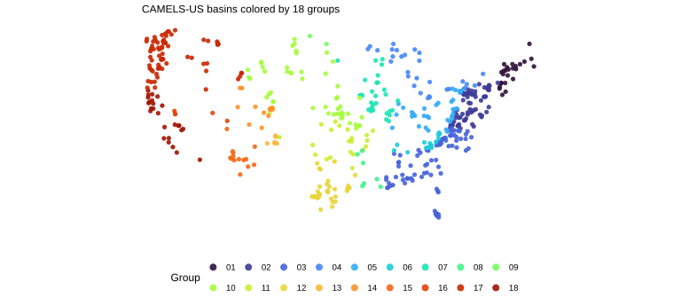
This map shows that groups are geographically dispersed rather than confined to a single hydro-climatic regime. Consequently, the transfer-learning conclusions are evaluated under substantial regional heterogeneity.
The basin map confirms broad spatial representation and substantial hydro-climatic heterogeneity, which is a prerequisite for meaningful transfer-learning evaluation.
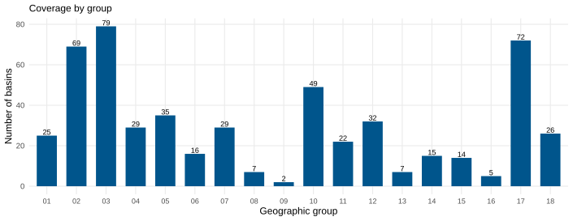
Coverage imbalance is important for interpretation. Groups with fewer basins generally have higher estimation variance, and thus are expected to benefit more from pretraining. This expectation is later cross-checked against observed gain patterns.
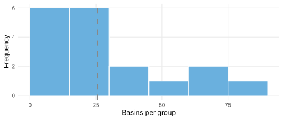
The histogram confirms non-uniform group sizes, which motivates basin-weighted aggregation in all headline statistics.
4.7.10 Additional Diagnostic Plots
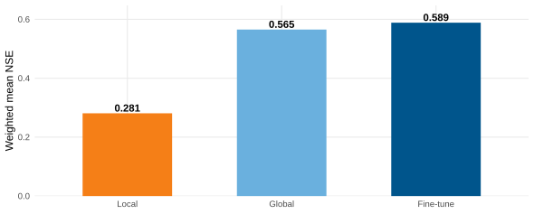
This bar chart restates Table 4.1 in visual form and makes the between-strategy NSE gaps easier to compare.
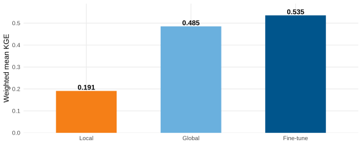
Consistent ordering under KGE supports the same conclusion as NSE and strengthens cross-metric robustness.
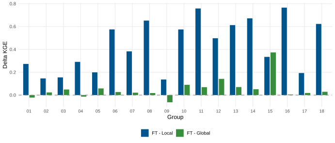
Group-level KGE deltas show whether transfer gains persist once correlation, variability, and bias are considered jointly.
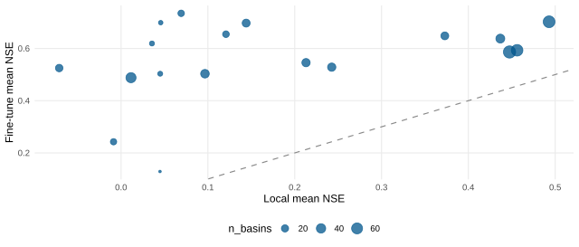
Points above the 1:1 line indicate groups where fine-tuning beats local training; bubble size indicates how many basins each group contains.
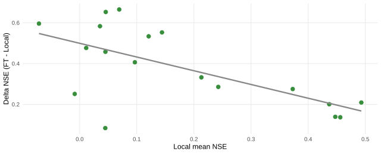
The negative slope indicates diminishing headroom: groups with stronger local baselines typically show smaller fine-tuning gains.
4.7.11 Architecture Comparison: EA-LSTM vs CudaLSTM
This comparison addresses model dependence of conclusions. If transfer benefits only appear in one architecture, practical recommendations should be narrowed. If the effect direction is stable across architectures, conclusions are more robust.
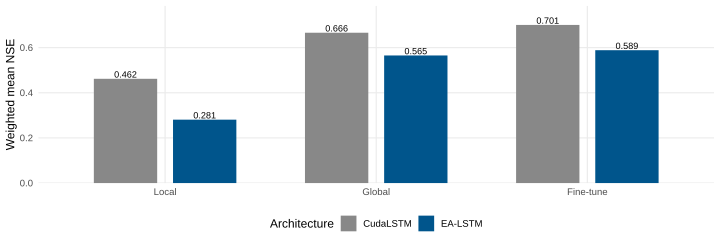
While absolute performance differs between architectures, the ordering by training strategy remains consistent, supporting a strategy-level interpretation rather than an architecture-specific anomaly.
Across both architectures, transfer-learning ranking remains stable. EA-LSTM and CudaLSTM differ in absolute values, but both support the same directional conclusion: fine-tuning dominates local-only training.
4.7.12 Group 05 Diagnostic Snapshot (EA-LSTM)
This subsection provides a concrete group-level case study. Group 05 is used as an illustrative diagnostic example because it exhibits clear but non-extreme transfer effects, making it suitable for discussing both mean-level and basin-level behavior.
| Setting | Mean_NSE |
|---|---|
| Global (EA-LSTM) | 0.608 |
| Local (EA-LSTM) | 0.437 |
| Fine-tune (EA-LSTM) | 0.638 |
Fine-tune minus Local = 0.201; Fine-tune minus Global = 0.030.
The table summarizes central tendency. However, mean effects can still mask local heterogeneity; therefore a basin-level bar decomposition is provided next.
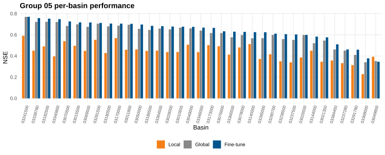
Sorting basins by fine-tuned NSE highlights whether gains are widespread or restricted to selected stations. The observed pattern supports broad within-group benefit.
4.7.13 Practical Synthesis
From an operational perspective, the extended slide-derived analyses reinforce a clear deployment rule: pre-train globally, then fine-tune locally. This recommendation is supported by aggregate metrics, group-level consistency, and basin-level distributional evidence.
For scientific reporting, this recommendation should be stated with scope conditions: it is supported for daily CAMELS-US settings, the examined feature space, and the current training budgets. Extrapolation to other hydro-climatic domains should be treated as a hypothesis to be tested rather than assumed.
4.8 Discussion and Outlook
This case study confirms that pretrain-and-adapt pipelines are a strong default for regional streamflow prediction. Nevertheless, several methodological limits remain.
- Single-seed uncertainty: the current benchmark is seed-fixed and should be extended with multi-seed confidence intervals.
- Geographic scope: evidence is currently from CAMELS-US; external validity should be tested on broader multi-region datasets such as Caravan.
- Metric scope: NSE and KGE summarize predictive skill but do not fully capture hydrograph signatures (e.g., peak timing and recession behavior).
- Climate extrapolation: transfer robustness under stronger future forcing shifts remains an open challenge.
Methodologically, the next step is a factorial sensitivity design varying pretraining budget, fine-tuning depth (head-only vs full), and climate-region holdout strategy. Scientifically, integrating physical constraints (e.g., MC-LSTM style mass-consistency) with transfer adaptation is a promising direction for robust climate-stress scenarios.
4.8.1 Toward Publication-Grade Extensions
To meet stronger inferential standards, future work should include:
- multi-seed uncertainty quantification (bootstrap or hierarchical intervals for \(\Delta_{\text{FT-Local}}\) and \(\Delta_{\text{FT-Global}}\));
- extreme-event conditioned evaluation (high-flow quantiles and event timing metrics);
- domain-shift protocols (climate-region holdout and synthetic forcing perturbation);
- ablation on adaptation depth (head-only vs partial vs full fine-tuning);
- physics-transfer interaction tests (EA-LSTM vs MC-LSTM transfer robustness).
These steps would convert the current strong empirical pattern into a more comprehensive causal argument about why and when transfer learning works in hydrology.
4.9 Summary
Neural hydrology has evolved from proof-of-concept LSTM experiments to a mature experimental ecosystem where physically informed design and transfer learning can be tested at scale. In this chapter, the transfer-learning benchmark provides direct empirical evidence that global pretraining followed by regional fine-tuning improves predictive skill in both aggregate and distributional views. The practical implication is straightforward: when local observations are limited, transfer learning should be treated as a default baseline rather than an optional enhancement.
At the same time, the chapter emphasizes that scientific robustness requires both predictive accuracy and structural credibility. The long-term research opportunity is therefore not a binary choice between process-based and data-driven paradigms, but a principled integration: physically informed sequence models trained with explicit cross-domain transfer objectives under non-stationary climate conditions.